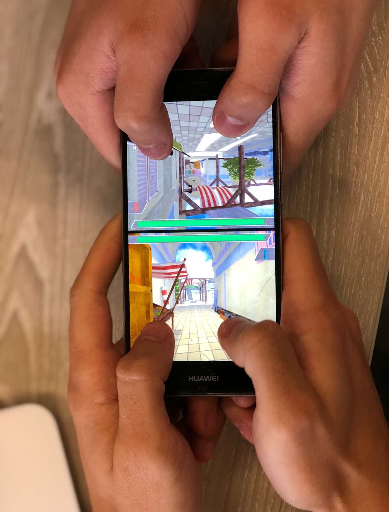

To gather the data on how consumers use the Battle Screen interface I employed 2 qualitative methods and one quantitative.
I performed all three in one sit down session.
To begin, I found two willing participants to play my game.
I then proceeded to get up the in-game instructions, after this point, it was up to them play the game.

Observation
The observation stage began as soon as the participants received the phone.
During play, I noted any observations down on a paper notepad.
With a more traditional keyboard and mouse game, where there is only one person playing on one screen, observation is significantly easier.
Trying to effectively observe two people at the same time was difficult, at best.
Additionally, the nature of a touchscreen meant that even more of the screen was covered by the participant's fingers. As can be seen by the image on the right.
One possible solution would be to record using a camera. When asked I asked if I could film them playing the responses were negative.
In the future, to increase the depth of the observations I will record them, so I can rewatch them at will.
Between the large amounts of the screen being covered and the fast nature of the game, I realise that observation was a weak source of qualitative data, for this particular interface.
Quantitative Interview
When deciding how I would gather the quantitative part of this study the immediate answer that came to mind was a digital questionnaire.
I however, did not take this approach, instead I decided to gather the quantitative part of my data during my interview.
The reason for doing this is people who are given a questionnaire by themselves are less likely to answer it honestly. [reference or something to justify]
Qualitative Interview
After the quantitative part of my interview I then moved on to the qualitative part.
During this part of the interview I asked the participants open, optional questions.
The reason for making the questions optional was to not force the participant to make an opinion.
I feel this way the replies I got back were more relevant to the users experience.